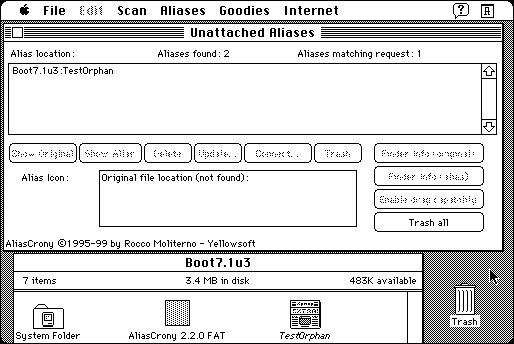

Download
aliascrony.zip (246K) Alias Crony 2.2.0 repackaged into a zipped hfs disk image and checksum file. The disk image can be mounted with Mini vMac.
aliascrony.hqx (336K) Alias Crony 2.2.0 in the original format.
copyright: Rocco Moliterno, Yellowsoft
mod date: Jul 31, 1999
license: shareware
from url :
AliasCrony
(download link gone)
The “ultimate alias manager”. For System 7. (Actually seems to require at least System 7.1 for some functions.)

If you find these downloads useful, please consider helping the Gryphel Project, which hosts them.
Here are the md5 checksums for the downloads, signed with Gryphel Key 5:
--------- GRY SIGNED TEXT --------- c8c113a1b5423aa2392dec9db29248f8 aliascrony.zip cb0f7453209c4f071857b1eeada53f33 aliascrony.hqx ------- BEGIN GRY SIGNATURE ------- Gry/4Xa8CFcUzxdN/E+2l3CBCT3gGtMR32oJTLbb1rcEtrAFqfQmUFl7t2+7JETF +yRYmEC5uF5oayZbtYjdhYj2eRpn/sh3XrV7QTQsd2DsUJVjuuLrvcstfWZ9pUon Fa2GxNfSpIor5+nOqqcpu7v8EiORBx4DPvBbn3ly3qht+oncg7VZMHv2j/hJZtIR -------- END GRY SIGNATURE --------